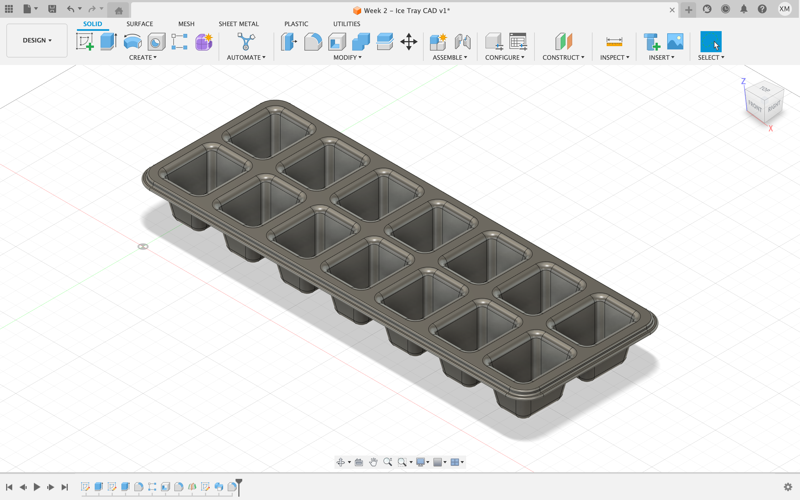

Week 2: Models, a Box, & Fusion
There were three assignments this week. The first was to build a box with the lasercutter. The second was to go through some Fusion 360 tutorial online. And the third was to model two household items in Fusion 360 and create an assembly composed of those items.
Getting Boxed In
For the box assignment, I decided to construct my box using a lot of scoring. I wanted to make as many visible edges as possible be live, more so for the aesthetics than for anything else. For this reason I chose to make the sides a continuous structure, only being joined in one location, and then use fingers/teeth to connect the bottom with all the sides. For the top, I chose to make a separate cover that fit snuggly on the box. Pictures of my designs are below. I technically made the box body and the cover in separate CAD files, but I combined them into one to make them easier to visualize.
Design for box and cover in Fusion 360.
The box turned out well, but there was one small issue. It turned out that scoring cardboard leads to a pretty unique an annoying problem. And that is that when you fold the cardboard, it might not fold perfectly down the middle of the cut, but instead stick to one side and have a wider opening on the other. And the result is that the box's sides don't join too easily, because the fingers are not perfectly aligned. This is fine, because the sides do still fit together. They just don't stay snug or exactly aligned. If I performed my cuts on wood, this would not be a problem. Below are some pictures of one of the boxes I made, without the cover. I decided to make it a cube because I liked that more, but I may eventually make a shoe-box shaped one in order to keep more stuff inside of it.


My box. I told it I think it's a bit of a square.
Learning to Make Ice in Fusion
For the Fusion 360 tutorial, I looked through past student sites for inspiration, found a good YouTube channel, and then chose an interesting model. The video details how to model an ice cube tray. I followed the steps exactly as they were explained in the video and I think the final product (below) ended up really nicely. The tutorial was particularly useful to understand well how to use the fillet and extrude tools, which I later used a lot in the final assignment.
My recreation of the ice-cube tray model.
Podding the Air and Boarding those Keys
For the final assignment, I chose to model a pair of airpods and a key from a keyboard I have.
Appled Airpods.

'Enter' Key (without the 'E').
Modeling the keyboard key was quite easy, and did not take too long. The hardest parts were actually figuring out how to change the color of the plastic and how to write the letters on top. I don't know if I did the letters perfectly, but I ended up just extruding text created as a sketch by 0.01mm, separating it from the rest of the key, and changing the material to be a black ink. Correct or not, it looks good.
Final version of my model of the key. (note mine does have the 'E')
Unfortunately, modeling the airpods took much more time and effort, and in the end it's not a perfect rendition. I tried to make it so that the cap of the airpods could turn on a hinge, but that ended being a little outside of my capabilities. That being said, getting the basic shape was actually quite easy. It took basically three steps: 1) sketch a slot, 2) extrude that slot to the desired height, and 3) fillet the entire component. The pictures below show what you are left with after just these first few steps.
First few steps of airpods model
So, really, the hard part of the airpods is getting all the other details figured out. As I said, I wasn't fully successful in doing this, but I was able to accomplish some of them. The different is visually not huge, but in terms of time effort I spent a lot more work on the finishing touches after the pictures above than on getting the overall shape right.
Final version of my airpods model.
Here they are assembled in one CAD file. I thought it would be funny to make the key much bigger than the airpod. (I definitely did this on purpose and it was not that I couldn't easily scale the airpod to make it bigger.
Airpods and key in one assembly.
I think both of my models ended up being very solid and true to the originals, so I'm happy.